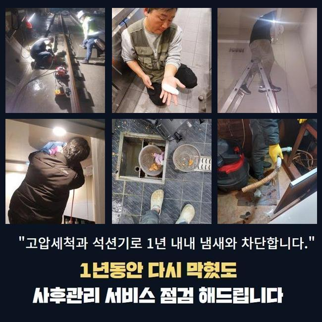
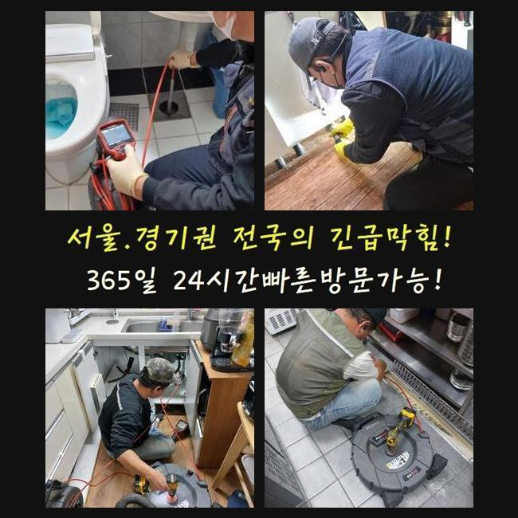
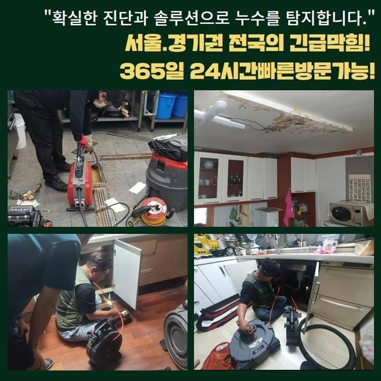
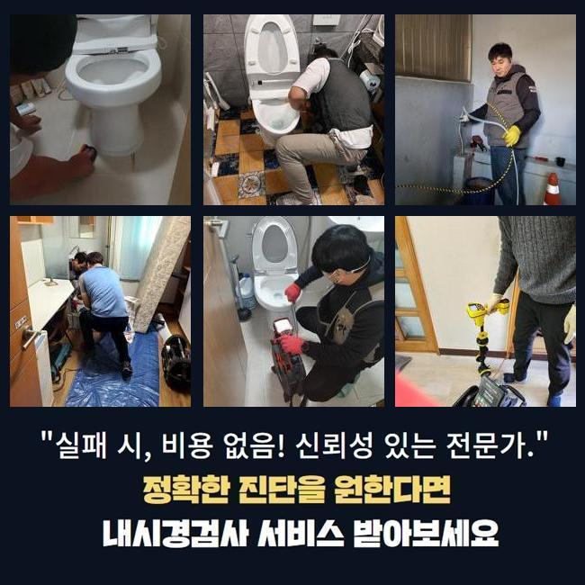
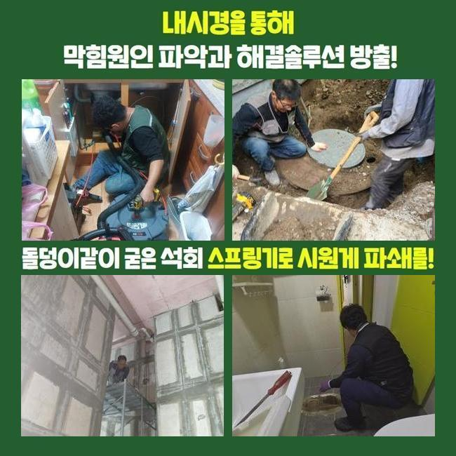
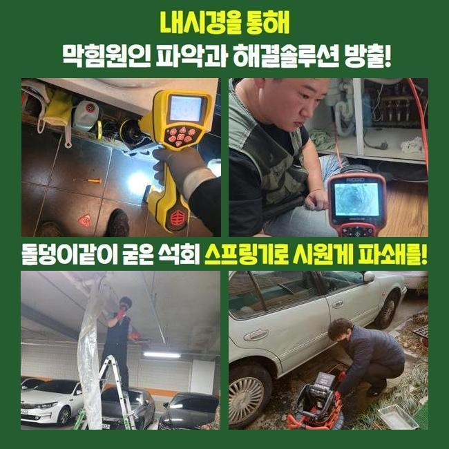
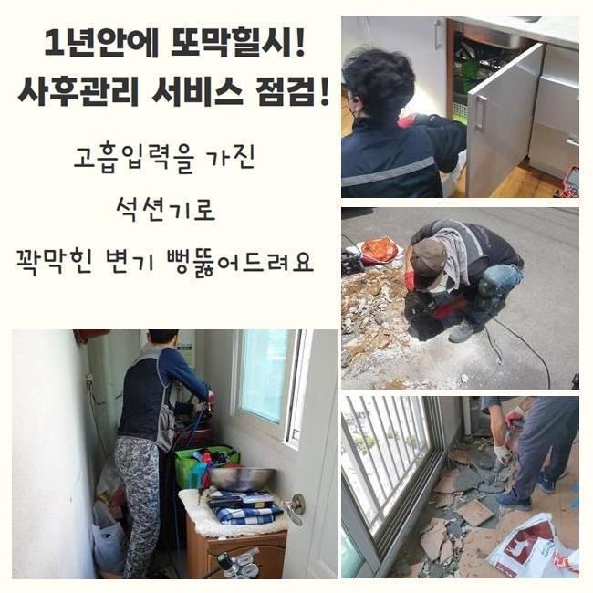

🏠 수원 평동욕실바닥막힘 권선동 하수구뚫는업체 부속수리
수원 싱크대막힘 전문 시공 후기

📋 작업 개요
- 위치: 수원
- 서비스 유형: 싱크대막힘, 하수구막힘, 배관막힘, 집수정막힘, 누수수리, 역류해결, 뚫는업체, 고압세척, 악취차단
- 작업 일시: 2025. 2. 15. 19:36
- 업체명: 하수구수사대 (010-5615-2118)
🔍 문제 상황
수원 평동욕실바닥막힘 권선동 하수구뚫는업체 부속수리
배관이 막히게 되었을때 간단한 문제로 해결을 원하시지만 방임할경우 2차문제들로 커질수있죠
신속히 대응한다면 좋지만 그럼에도 불구하고 조치하지 못했다면 업체를통해 막힘증세를 해결하시는게 좋습니다
이번에 방문했던곳은 밀집된 상가건물인데 하수도가 갑자기 막혀버려 문의주셨죠
이런 문제들이 발생하면 물을 사용하지 못하니 1시간 안팎으로 방문드려요
상가건물안 음식점에서 막히게 되었다고 하셨죠
주말에 식당운영을 진행해봐야 하다보니 신속히 해결해야했죠
막힌원인에 대하여 알아내기 위하여 서둘러서 움직였죠
식당입구쪽과 부엌내부를 살핀결과 트렌치부터 메인하수구도 문제가있었죠
현재상황이 어떠한지 고객분께 알려드리고나서 작업을 시작하기로 했어요
작업착수전 필히 의뢰자에게 상황에대해 설명드리고있죠

🔎 원인 분석
💡 전문가 진단: 정밀 진단 장비를 사용하여 슬러지의 고착 여부를 판명하고 타격/세척 작업을 실시했습니다.
샤프트기계로 내부속에 쌓여있는 잔해물을 꺼냈는데요
식당이다보니 기름기가 상당량으로 쌓인 상태였습니다
조심스러운 강도조절로 안속에 쌓인것들을 없애줬어요
수리중간에 이물제거가 깔끔히 되고있는지 하수구카메라로 체크까지 해주었죠
역류하고있는 배관이다보니 신경을쓰며 손상이 일어나지 않게끔 작업에 임했는데 다행인것으로 2차증세없이 역류문제를 해결하여 안심할수있었죠
외부작업을 마친뒤 주방내부쪽으로 이동했습니다
부엌에 위치하는 씽크대가 막허버려서 배관카메라로 우선 검수를 진행해주었는데요
원인파악을 해봤더니 기름이물이 쌓이면서 막힘문제가 일어난걸로 판단할수있었어요
석회물을 없애기위해 샤프트기를 써서 분해시켰어요
이후엔 남겨진 이물을 석션기를 통해 흡입시키는 작업을 통해 이물제거가 깔끔히 되었죠
이러한 문제가 발생되는것은 다양한 원인으로 막히게되는데 주요한이유는 오염물질 때문이죠

🔧 작업 과정
그렇기때문에 각종 오염물이 들어가지않도록 주의해주시고 주기적인 하수구점검을 진행하여 문제는 없는지 살펴봐야 한답니다
이렇게 한참동안 작업에 몰두하여 트렌치하수구 안쪽에 유입된 기름슬러지와 오염물들을 해결해냈어요
집수정도 함께 문제를 보인것을 파악했는데 집수정특성상 단순한 기계로는 해결하기란 어려운까닭에 고압세척도구가 필요한 상황이었죠
작업에 들어가기전에 고객분꼐 동의를얻고 고압세척기의 필요성을 상세하게 일러드렸어요
고압세척은 강한압력의 물을 통하여 이용되기에 작업자가 주의하여 수리하는것이 요구되는데요
자칫하면 하수구벽면에 크랙이 발생하여 배관을 교체하는 경우로까지 연결될 가능성이 있어요
집수정안에 기름기가 가득하여 고압세척기를 통해 오염물들을 밀어내면서 제거해주었죠
안쪽과 바깥쪽을 전부 작업해보니 배수상황이 원활히 이루어지는것을 확인할수있었죠
식당과같이 영업장소는 금전적으로 손해가 발생되는것을 알고있기에 주말에도 출동해드려요
씽크대배수구망 이라든지 냄새차단 트랩을통해 막힘현상과 악취문제를 예방할수있죠
확실히 처리해내는 해결방안은 막힘징조가 나타날때 즉각적인 대처로 전문업체를 통하여 처리하는겁니다
한번 더 강조드리는것으로 막힘을 방치하면 누수문제나 역류되는 문제로 연결될수있어요
막힘증세를 처리하고자 셀프조치를 해보셨을텐데 간단히 시도할수있는 방식들을 알려드려보죠
온수의물이나 하수도클리너를 적절하게 배수관에 흘려보내시고 뚫리지못하면 전문업체를 통해 수리를 받으셔야해요
무리하여 흘려보낸다면 배관에 손상이 발현될수도 있기에 일정한 양으로만 시도하시는게 좋아요
어느장소라도 배수관이 막히게된다면 당혹스러울 겁니다
저희들의 경우에는 가정집과 음식점 다세대건물등 어떠한 장소든 방문해드립니다


✅ 작업 완료
작업을 진행할때 분명한 수립계획으로 공개해야지만 믿을수가 있으실거에요
현장상황을 우선 살핀후 뚫는비용을 자세하게 전달드립니다
씽크대나 욕실배관은 간단하게 석션기로만 해결될경우 50000원으로 청구드리니 참고하세요!
이밖으로도 궁금증이 있으실경우 시간상관없이 전화주신다면 상세한 상담으로 도와드릴테니 걱정마세요!
하수구가 막혔다면 빠르게 대응하여 쾌적한 환경을 조성하시길 바랍니다




⚠️ 베란다 누수 및 방수 관리 방법
- ✅ 비가 많이 올 때 창틀 주변이나 아래층 천장에 얼룩이 생기는지 정기적으로 확인해 보세요.
- ✅ 우수관 주변 실리콘 마감이 들뜨거나 깨진 틈새가 있는지 손상 여부를 수시로 체크하세요.
- ✅ 베란다 바닥 타일의 줄눈(메지)이 소실되면 그 틈으로 물이 침투하여 누수가 유발됩니다.
- ✅ 누수 의심 증상 발견 시 방치하면 아래층 손실이 커지므로 즉시 전문가의 진단을 받으십시오.
💡 핵심 정리
- 확실한 장비 작업(내시경 점검 및 샤프트 스케일링)으로 원인을 뿌리 뽑습니다.
- 작업 후 1년 이내에 동일한 부위 재발 시 100% 무상 A/S 서비스를 보장합니다.
- 서울 · 경기 · 인천 전 지역에 24시간 언제든 긴급 출동할 수 있도록 항시 대기 중입니다.
❓ 자주 묻는 질문 (FAQ)
🚨 수원 싱크대막힘 문제로 고민이신가요?
정확한 원인 진단과 확실한 시공으로 재발 없는 해결을 약속드립니다.
24시간 긴급 출동 | 서울 · 경기 · 인천 전지역 | 1년 내 재발 시 무상 A/S